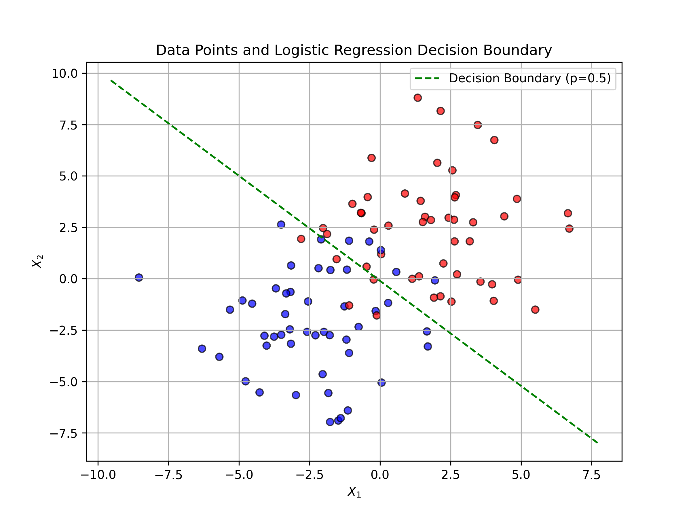
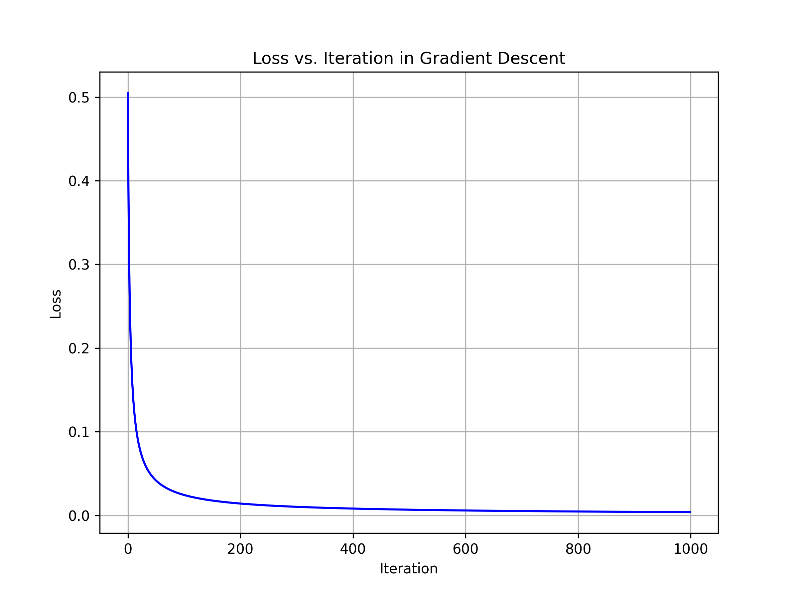

Section 2.3 Multi-Feature Problems
In supervised learning tasks, our objective is to predict the value of a target variable \(Y\text{,}\) given the feature variable \(X\text{.}\) Both \(X\) and \(Y\) can be a multivariate variable - for instance, you may want to predict price \(Y\) of a house based on it’s size \((X_1)\) and neighborhood \((X_2)\text{.}\) In this section, while we will keep the target variable a simple scalar, e.g., a rel number or binary \(0/1\) or \(K\)-categories, we will look at problems that have multiple independent feature variables in each instance of the data.
Let \(X\) consists of \(r\) variables,
\begin{equation*}
X = (X_1, X_2, \cdots, X_r)
\end{equation*}
Usually, a vector notation is used to organize the variables in a column vector or it’s transposed as a row vector.
\begin{equation*}
\vec{X} = \begin{bmatrix}
X_1\\
X_2\\
\vdots\\
X_r
\end{bmatrix} = [X_1\ X_2\ \cdots\ X_r]^T
\end{equation*}
The datasets for such \((X,Y)\) systems can be organized into table, e.g., a Excel sheet or a csv file. They are called structured data.
A dataset \(\mathcal{D}\) will consist of \(n\) observations on \((X,Y)\) and will look the same superficially, but each point will have more details.
\begin{equation}
\mathcal{D} = \{
(x^{(1)}, y^{(1)}), (x^{(2)}, y^{(2)}), \cdots, (x^{(n)}, y^{(n)})
\}\tag{2.3.1}
\end{equation}
with each \(x^{(i)}\text{,}\) now having more details.
\begin{equation*}
x^{(i)} = \begin{bmatrix}
x_1^{(i)}\\
x_2^{(i)}\\
\vdots\\
x_r^{(i)}
\end{bmatrix}
\end{equation*}
Besides the structured data, we also have unstructured data. For instance, when there is an important order information within the components of the \(X\) variable, representing them into independent e.g., if \(X\) is a \(100 \times 120\) pixels photograph, then you could represent this \(X\) as a long \(12,000\)-element vector, but that would lose the information about the neighboring pixels. A better representation would be to represent this \(X\) by a matrix, or a 2-dimensional tensor, with components, now labelled with two indices.
\begin{equation*}
X = (X_{ij},\ i = 1,\cdots, 100,\ j = 1,\cdots, 120 ).
\end{equation*}
Often, books use a bold face letter \(\mathbf{X}\) to represent such variables. We might also do that if we want to emphasize the multidimensionality aspect. Non-table data like these are referred to as unsrtructured data. This is a catch all phrase and includes any \((X,Y)\) data that is not organized as a table/sheets.
Subsection 2.3.1 Multi-Feature Linear Regression
In a linear regression, we model the predictor function by a constant plus a linear function of \(X\text{.}\) When \(X\) was a scaler we had
\begin{equation*}
f(X) = \beta_0 + \beta_1\, X.
\end{equation*}
Now, we have \(X\) that has \(r\) components. That means, we will now have one term for each component.
\begin{equation}
f(X) = \beta_0 + \beta_1\, X_1 + \beta_2\, X_2 + \cdots + \beta_r\, X_r.\tag{2.3.2}
\end{equation}
That will result in the following empirical squared loss from the data.
\begin{equation*}
\mathcal{L}_D = \frac{1}{n}\,\sum_{i=1}^n\, \left( y^{(i)} - \beta_0 - \beta_1\, x_1^{(i)} - \beta_2\, x_2^{(i)} - \cdots - \beta_r\, x_r^{(i)} \right)^2
\end{equation*}
Optimized parameters will minimize this \(\mathcal{L}_D\text{.}\) The derivative with respect \(\beta_0\) has a different form than the other derivatives. Dropping a common factor \(2/n\text{.,}\) the results are:
\begin{align*}
\amp \frac{\partial \mathcal{L}_D}{\partial \beta_0} = \sum_{i=1}^n\, \left( \beta_0 + \beta_1\, x_1^{(i)} + \beta_2\, x_2^{(i)} + \cdots + \beta_r\, x_r^{(i)} - y^{(i)}\right) = 0 \\
\amp \frac{\partial \mathcal{L}_D}{\partial \beta_s} = \sum_{i=1}^n\, \left( \beta_0 + \beta_1\, x_1^{(i)} + \beta_2\, x_2^{(i)} + \cdots + \beta_r\, x_r^{(i)} - y^{(i)}\right)\,x_s^{(i)} = 0,
\end{align*}
where the indices \(s=1,2,\cdots, r\text{.}\) These equations are linear in the parameters \(\beta_0, \beta_1, \cdots, \beta_r\) and can be solved analytically. A matrix language provides a more compact way to see the solution.
Although, the matrix-form solution itself is not very illuminating, the language used to build the solution will be used throughout in more afvanced algorithms. Therefore, we take time to present it here.
Notice, we have \((r+1)\) parameters, \(\beta_0, \beta_1, \beta_2, \cdots, \beta_r\text{.}\) We organize them in a parameter vector \(\vec{\beta}\text{.}\)
\begin{equation*}
\vec{\beta} = \begin{bmatrix}
\beta_0\\
\beta_1\\
\beta_2\\
\vdots\\
\beta_r
\end{bmatrix}
\end{equation*}
We modify \(r\)-dimensional \(\vec{X}\) into an \((r+1)\)-dimensional vector whose first element is \(1\) and rest of them same as those of \(\vec{X}\text{.}\)
\begin{equation*}
\vec{X}_\text{new} = \begin{bmatrix}
1\\
X_1\\
X_2\\
\vdots\\
X_r
\end{bmatrix}
\end{equation*}
Then, \(f(\vec{X})\) is just a dot product of \(\vec\beta\) and \(\vec{X}_\text{new}\text{.}\)
\begin{align*}
f(X) \amp = \vec{\beta} \cdot X_\text{new} = \vec{\beta}^T\,X_\text{new} = \vec{X}_\text{new}^T\,\vec{\beta}\\
\amp = \beta_0 + \beta_1\, X_1 + \beta_2\, X_2 + \cdots + \beta_r\, X_r.
\end{align*}
The next level of compacting the notation is to represent the \(X\) part of the dataset by rows in a matrix that now includes a \(1\) at the first column location. Let’s denote this matrix \(\mathbb{X}_D\text{.}\) It is called the design matrix and isusually denoted without the subscript \(D\text{,}\) but we want it there to remind us that it is a data-dependent quantity.
\begin{equation*}
\mathbf{X}_D = \begin{bmatrix}
1 \amp x_1^{(1)} \amp x_2^{(1)} \cdots \amp x_r^{(1)}\\
1 \amp x_1^{(2)} \amp x_2^{(2)} \cdots \amp x_r^{(2)}\\
\vdots \\
1 \amp x_1^{(n)} \amp x_2^{(n)} \cdots \amp x_r^{(n)}
\end{bmatrix}
\end{equation*}
The \(Y\)-part of the dataset is now a \(n\)-length vector. Let’s represent it by \(\mathbf{Y}_D\text{.}\)
\begin{equation*}
\mathbf{Y}_D = \begin{bmatrix}
y_1^{(1)}\\
y_1^{(2)}\\
\vdots \\
y_1^{(n)}
\end{bmatrix}
\end{equation*}
Using matrix multiplications, the empirical squared loss function now takes this really compact form.
\begin{equation}
\mathcal{L}_D = \frac{1}{n}\left( \mathbf{Y}_D - \mathbf{X}_D \vec{\beta} \right)^T\,\left( \mathbf{Y}_D - \mathbf{X}_D \vec{\beta} \right)\tag{2.3.3}
\end{equation}
Setting the derivative of this loss function with vector \(\vec\beta\) gives the following equation for the optimal parameters \(\hat{\vec{\beta}}\text{.}\) For calculations of this step see below.
\begin{equation}
\frac{\partial \mathcal{L}_D}{\partial \vec{\beta}} = 0 \implies \mathbf{X}_D^T\,\mathbf{X}_D\,\hat{\vec{\beta}} - \mathbf{X}_D^T\, \mathbf{Y}_D = 0.\tag{2.3.4}
\end{equation}
Therefore, if the inverse of square matrix \((\mathbf{X}_D^T\,\mathbf{X}_D)\) exists, then,
\begin{equation}
\hat{\vec{\beta}} = \left(\mathbf{X}_D^T\,\mathbf{X}_D \right)^{-1}\,\mathbf{X}_D^T\, \mathbf{Y}_D.\tag{2.3.5}
\end{equation}
Using the estimated \(\hat{\vec{\beta}}\) can be used in \(f(\vec X)\) to predict \(Y\) for a new \(\vec{x}^{(n+1)}\) by
\begin{equation}
y^{(n+1)} = \vec x^{(n+1)}_\text{new} \cdot \hat{\vec{\beta}},\tag{2.3.6}
\end{equation}
where
\begin{equation*}
\vec x^{(n+1)}_\text{new} = \begin{bmatrix}
1 \amp x_1^{(n+1)} \amp x_2^{(n+1)} \cdots \amp x_r^{(n+1)}
\end{bmatrix}
\end{equation*}
Subsubsection 2.3.1.1 Taking Derivatives With Respect To A Vector
In Eq. (2.3.4) I gve you the result of taking derivative of the loss function with respect to vector \(\vec\beta\text{.}\) This actually is a compact way of writing the derivatives with respect to each component of the vector. What does \(\frac{\partial \mathcal{L}_D}{\partial \vec{\beta}}\) mean?
\begin{equation}
\frac{\partial \mathcal{L}_D}{\partial \vec{\beta}} = \begin{bmatrix}
\frac{\partial \mathcal{L}_D}{\partial \beta_0}\\
\frac{\partial \mathcal{L}_D}{\partial \beta_1}\\
\frac{\partial \mathcal{L}_D}{\partial \beta_2}\\
\vdots\\
\frac{\partial \mathcal{L}_D}{\partial \beta_r}
\end{bmatrix}\tag{2.3.7}
\end{equation}
We then work out expression for a generic row, say the \(s^\text{th}\) row by writing out \(\mathcal{L}_D\) explicitly. For simplification in notation, let us drop the subscript \(D\) from our symbols, except for \(\mathcal{L}_D\text{.}\) We are also going to pull \(n\) on the \(\mathcal{L}_D\) since \(n\) is constant.
\begin{align*}
\frac{\partial (n\,\mathcal{L}_D)}{\partial \beta_s} \amp =
\frac{\partial}{\partial \beta_s} \sum_{i=1}^n\ \left[ \left( y^{(i)} - \sum_{t=0}^r x^{(i)\,}_t\,\beta_t\right)\, \left(y^{(i)} - \sum_{u=0}^r x^{(i)\,}_t\,\beta_u \right) \right]\\
\amp = \sum_{i=1}^n\ \left[ \left( 0 - \sum_{t=0}^r x^{(i)\,}_t\,\delta_{ts}\right)\, \left(y^{(i)} - \sum_{u=0}^r x^{(i)\,}_u\,\beta_u \right) \right]\\
\amp \quad + \sum_{i=1}^n\ \left[ \left( y^{(i)} - \sum_{t=0}^r x^{(i)\,}_t\,\beta_t\right)\, \left( 0 - \sum_{u=0}^r x^{(i)\,}_u\,\delta_{us} \right) \right],
\end{align*}
where \(\delta_{ts}\) is Kronecker delta, which is \(1\) when \(t=s\) and \(0\) otherwise.
\begin{equation*}
\delta_{ts} = \begin{cases}
1\amp \quad \text{if }\ t=s\\
0\amp \quad\text{otherwise}
\end{cases}
\end{equation*}
Now, continuiung with the calculations,
\begin{align*}
\frac{\partial \mathcal{L}_D}{\partial \beta_s} \amp
= -\frac{2}{n} \sum_{i=1}^n\ \left[ x^{(i)\,}_s\, \left(y^{(i)} - \sum_{u=0}^r x^{(i)\,}_u\,\beta_u \right) \right]
\end{align*}
Setting this to zero will yield \((r+1)\) equations in \((r+1)\) unknown \(\beta_s\)’s. Neglecting the common factor \((-2/n)\) and writing the non-\(\beta\) terms on the right side, we can collect all \(r+1\) equations in a matrix form.
\begin{equation*}
\begin{bmatrix}
\sum_{i=1}^n\,x_0^{(i)}x_0^{(i)} \amp \sum_{i=1}^n\,x_0^{(i)}x_1^{(i)} \amp \cdots \amp \sum_{i=1}^n\,x_0^{(i)}x_r^{(i)} \\
\sum_{i=1}^n\,x_1^{(i)}x_0^{(i)} \amp \sum_{i=1}^n\,x_1^{(i)}x_1^{(i)} \amp \cdots \amp \sum_{i=1}^n\,x_1^{(i)}x_r^{(i)} \\
\vdots\\
\sum_{i=1}^n\,x_r^{(i)}x_0^{(i)} \amp \sum_{i=1}^n\,x_r^{(i)}x_1^{(i)} \amp \cdots \amp \sum_{i=1}^n\,x_r^{(i)}x_r^{(i)} \\
\end{bmatrix}
\
\begin{bmatrix}
\beta_0\\
\beta_1\\
\beta_2\\
\vdots\\
\beta_r
\end{bmatrix}
=
\begin{bmatrix}
\sum_{i=1}^n\,x_0^{(i)}y^{(i)}\\
\sum_{i=1}^n\,x_1^{(i)}y^{(i)}\\
\sum_{i=1}^n\,x_2^{(i)}y^{(i)}\\
\vdots\\
\sum_{i=1}^n\,x_r^{(i)}y^{(i)}
\end{bmatrix}
\end{equation*}
The left side is \(X_D^TX_D\vec\beta\) and the right side is \(X_D^TY_D\text{.}\)
\begin{equation*}
\mathbf{X}_D^T\, \mathbf{X}_D\vec\beta = \mathbf{X}_D^T\, \mathbf{Y}_D.
\end{equation*}
Subsection 2.3.2 Multi-Feature Logistic Regression
In multivariate logistic regression, we model the probability that a binary outcome \(Y \in \{0, 1\}\) equals 1 given a vector of features \(\vec{X} = (X_1, X_2, \dots, X_r)\text{.}\) For this treatment, we focus on the two-dimensional case where \(r = 2\text{,}\) so \(\vec{X} = (X_1, X_2)\text{.}\) The model assumes a linear relationship in the logit space:
\begin{equation*}
P(Y=1 \mid X_1, X_2) = p = \frac{1}{1 + \exp(-z)},
\end{equation*}
where \(z = \beta_0 + \beta_1 X_1 + \beta_2 X_2\) is the linear predictor, and \(\sigma(z) = \frac{1}{1 + \exp(-z)}\) is the sigmoid (logistic) function that maps \(z\) to a probability between 0 and 1. The parameters \(\beta_0\) (intercept), \(\beta_1\text{,}\) and \(\beta_2\) (coefficients for \(X_1\) and \(X_2\)) are estimated from data.
To train the model, meaning finding the optimal values of the parameters \(\beta_0\text{,}\) \(\beta_1\text{,}\) and \(\beta_2\text{,}\) we minimize the data-based empirical binary cross-entropy loss (also known as the negative log-likelihood, up to a constant factor) as we did for scalar \(X\) when we discussed the logistic regression for binary classification for a scalar \(X\text{:}\)
\begin{equation*}
\mathcal{L}_D(\vec{\beta}) = -\frac{1}{n} \sum_{i=1}^n \left[ y^{(i)} \log p^{(i)} + (1 - y^{(i)}) \log (1 - p^{(i)}) \right] \equiv \frac{1}{n} \sum_{i=1}^n\, l^{(i)},
\end{equation*}
where \(n\) is the number of observations, \(y^{(i)}\) is the observed label for the \(i\)-th data point, \(p^{(i)} = \sigma(\beta_0 + \beta_1 x_{1}^{(i)} + \beta_2 x_{2}^{(i)})\text{,}\) and \(l^{(i)}\) loss for the \(i^\text{th}\) datapoint.
To find optimized parameters, we need the derivative of the loss function with respect to the parameters. A detailed calculation is shown below.
\begin{equation*}
\frac{\partial \mathcal{L}_D}{\partial \beta_s} = \frac{1}{n} \sum_{i=1}^n (p^{(i)} - y^{(i)}) x_{j}^{(i)}, \quad j = 0, 1, 2.
\end{equation*}
In matrix form, if \(\mathbf{X}_D\) is the \(n \times 3\) design matrix (with a column of 1s for the intercept), the gradient vector is
\begin{equation*}
\nabla_{\vec\beta}\mathcal{L}_D = \frac{1}{n} \mathbf{X}_D^T (\vec{p} - \vec{y})\text{,}
\end{equation*}
where \(\vec p\) and \(\vec y\) are \(n\)-dimensional vectors with each component referring to the data instants.
Optimization by gradient descent method used these derivatives in each iteration through the dataset. The initial values of the parameters are set randomly or some other procedure and then evolved iteratively. Let us denote the values of the parameters at iteration \(t\) by a superscript index \(t\text{,}\) e.g., \(\vec{\beta}^{(t)}\text{,}\) then after the next iteration, the values will be updated via gradient descent with the following rule.
\begin{equation*}
\vec{\beta}^{(t+1)} = \vec{\beta}^{(t)} - \alpha\, \left[ \nabla_{\vec\beta}\mathcal{L}_D \right]_{\vec{\beta}^{(t)}},
\end{equation*}
where \(\alpha\) is the learning rate. The updates are repeated until convergence (e.g., when the empirical loss stabilizes).
After you find the optimal parameters, you can use them to deduce the boundary decision that you use to predict the class to which a new \(X\) would belong. In the case of a two-dimensional \(X\text{,}\) the decision boundary will be the following straight line.
\begin{equation}
\hat{\beta}_0 + \hat{\beta}_1\, x_1 + \hat{\beta}_2\, x_2 = 0.\tag{2.3.8}
\end{equation}
Figure 2.3.1 shows an example decision boudary.

Subsubsection 2.3.2.1 Derivatives of the Loss Function
The loss is convex in \(\vec{\beta} = (\beta_0, \beta_1, \beta_2)\text{,}\) so we can use gradient descent to find the minimum. The partial derivatives (gradient components) are derived as follows:
Start with the chain rule on a single term in the ampirical loss function:
\begin{equation*}
l^{(i)} \equiv -[y^{(i)} \log p^{(i)} + (1-y^{(i)}) \log (1-p^{(i)})]
\end{equation*}
Dropping the indices from the symbols for simplicity, we have
\begin{equation*}
-\frac{\partial}{\partial \beta_s} [y \log p + (1-y) \log (1-p)] = - \left[\frac{y}{p} - \frac{1-y}{1-p} \right]\frac{\partial p}{\partial \beta_s}.
\end{equation*}
The derivative on the right side is
\begin{equation*}
\frac{\partial p}{\partial \beta_s} = \frac{\partial \sigma(z(\vec\beta))}{\partial \beta_s} = \frac{\partial \sigma(z )}{\partial z}\, \frac{\partial z}{\partial \beta_s}.
\end{equation*}
The last derivative is readily done since \(z = \beta_0 + \beta_1 x_1 + \beta_2 x_2\text{.}\)
\begin{equation*}
\frac{\partial z}{\partial \beta_s} = x_s,\quad (\text{recall }x_0 = 1).
\end{equation*}
For the other derivative
\begin{align*}
\frac{\partial \sigma(z )}{\partial z}\amp = \frac{d}{dz}\left( \frac{1}{1+ e^{-z}} \right) = \frac{e^{-z}}{\left(1+ e^{-z}\right)^2}\\
\amp = \frac{1 + e^{-z} - 1}{\left(1+ e^{-z}\right)^2}= \frac{1 + e^{-z}}{\left(1+ e^{-z}\right)^2} - \frac{1 }{\left(1+ e^{-z}\right)^2}\\
\amp = \sigma - \sigma^2 = \sigma(1-\sigma) = p(1-p)
\end{align*}
Putting these altogether, we have
\begin{equation*}
\frac{\partial l^{(i)}}{\partial \beta_s} = \left(p^{(i)} - y^{(i)} \right) x^{(i)}_s.
\end{equation*}
Therefore, the derivative of the empirical loss function will be
\begin{equation*}
\frac{\partial \mathcal{L}_D}{\partial \beta_s} = \frac{1}{n} \sum_{i=1}^n (p^{(i)} - y^{(i)}) x_{j}^{(i)}, \quad j = 0, 1, 2.
\end{equation*}
In matrix form, if \(\mathbf{X}_D\) is the \(n \times 3\) design matrix (with a column of 1s for the intercept), the gradient vector is
\begin{equation*}
\nabla_{\vec\beta}\mathcal{L}_D = \frac{1}{n} \mathbf{X}_D^T (\vec{p} - \vec{y})\text{,}
\end{equation*}
where \(\vec p\) and \(\vec y\) are \(n\)-dimensional vectors with each component referring to the data instants.
Subsubsection 2.3.2.2 A Python Program for the Logistic Regression
The following program implements logistic regression for a two-variate \(X\) and \(Y \in \{0,\ 1\}\) using gradient descent algorithm. In the future, we will learn to use python packages that do a lot of the calculations behind the scene.
The program below plots the value of the loss function at each iteration shown in Figure 2.3.2. You can see that the loss stadily goes to zero for the dataset used.

import numpy as np
import matplotlib.pyplot as plt
# Generate data (reproducible)
np.random.seed(42)
n = 50
X0 = np.random.normal(-2, 1, (n, 2))
Y0 = np.zeros(n)
X1 = np.random.normal(2, 1, (n, 2))
Y1 = np.ones(n)
X = np.vstack((X0, X1))
Y = np.hstack((Y0, Y1))
indices = np.arange(2 * n)
np.random.shuffle(indices)
X = X[indices]
Y = Y[indices].reshape(-1, 1)
# Add intercept column
X_with_intercept = np.hstack((np.ones((2 * n, 1)), X))
# Sigmoid function
def sigmoid(z):
return 1 / (1 + np.exp(-z))
# Loss function
def loss(X_with_intercept, Y, beta):
z = X_with_intercept @ beta
p = sigmoid(z)
return -np.mean(Y * np.log(p + 1e-10) + (1 - Y) * np.log(1 - p + 1e-10))
# Gradient descent with loss tracking
beta = np.zeros((3, 1))
learning_rate = 0.1
iterations = 1000
n_samples = X_with_intercept.shape[0]
losses = []
for i in range(iterations):
z = X_with_intercept @ beta
p = sigmoid(z)
gradient = (1 / n_samples) * (X_with_intercept.T @ (p - Y))
beta -= learning_rate * gradient
current_loss = loss(X_with_intercept, Y, beta)
losses.append(current_loss)
# Plot loss vs. iteration
plt.figure(figsize=(8, 6))
plt.plot(range(iterations), losses, 'b-')
plt.xlabel('Iteration')
plt.ylabel('Loss')
plt.title('Loss vs. Iteration in Gradient Descent')
plt.grid(True)
plt.show()